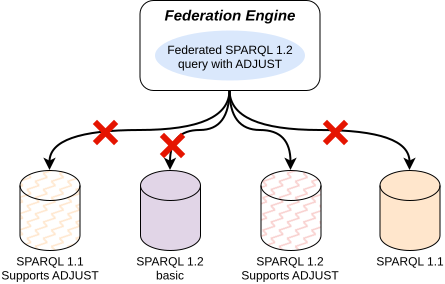
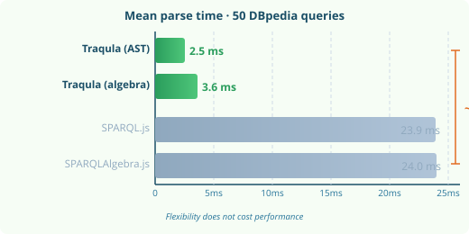

Ghent University – imec – IDLab, Belgium
Research Foundation - Flanders
SPARQL 1.0SPARQL 1.1SPARQL 1.2 - BasicSPARQL 1.2 - FullCONSTRUCT GRAPHADJUSTOPTIONAL are complex
Bridging is essential
A SPARQL 1.2 query may fail on an older SPARQL endpoint
Linters, Editors, and formatters assume a single SPARQL version
Multi-version support
→ messy hard to maintain code
if SPARQL_1_1 ...
else if SPARQL 1.2A · remove B · patch C
Compose parsers,
generators & transformers
from small, reusable
grammar rule modules
Parse → transform → regenerate:
only the intentional
change is reflected
TypeScript/ JavaScript
Runs in browsers
and server-side
(Node.js, Bun, Deno)
Generic core
can support many languages
SPARQL, SHACL-Compact, GQL and other languages
| Tool | Flexible | Round-trip | Web-native | Lang-agnostic |
|---|---|---|---|---|
| Apache Jena Generated (JavaCC) |
✗ | ✗ | ✗ | ✗ |
| SPARQL.js Generated (Jison) |
✗ | ✗ | ✓ | ✗ |
| Stardog Millan Toolkit (Chevrotain) |
~ | ✗ | ✓ | ✗ |
| Traqula Toolkit (Chevrotain) |
✓ | ✓ | ✓ | ✓ |
13 of 16 popular parsers use generated grammars — none satisfies all four requirements
?s→?subject → only that token changes
SelECT * {
?s ?p ?o
}
SelECT * {
?subject ?p ?o
}
SelECT, extra spacing ?p ?o, comments, punctuation
?s → ?subject — only the patched AST node is regenerated

Key findings
Thanks to Chevrotain's optimised V8 runtime + parser reuse
The Problem
SPARQL dialect heterogeneity is a growing challenge for federated querying and tooling
The Solution
Traqula: modular · round-trippable · web-native · 10× faster than alternatives
The Impact
Foundation for federated SPARQL · linters · formatters · language servers · future query languages
github.com/comunica/traqula · traqula-resource.jitsedesmet.be
© 2026 Jitse De Smet Creative Commons Attribution 4.0, unless otherwise indicated.
Source